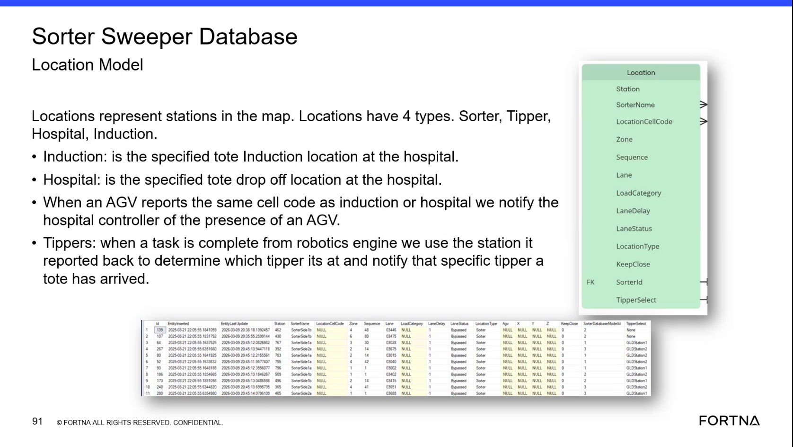

| Procedure ID | proc_validate_sorter_location_records_and_lane_status_in_ssms_v1 |
|---|---|
| Title | Validate Sorter Location Records and Lane Status in SSMS |
| Procedure Type | diagnostic |
| Primary Role | L2_support |
| Support Safe | Yes |
| Capability Tags | lane_or_chute_state, zone_config_state |
| Access Surface | wcs_sql |
| Audience Roles | L2_support, L3_support |
| Failure Pattern Tags | mapping_abnormal, chute_bypassed_or_stuck_closed |
| Validation Status | needs_sme_review |
| Merge Status | source_finalized |
Use the WCS / Helix DB (SSMS) in read-only mode to inspect the SorterSweeper Location Model, verify station and location mappings, and interpret LaneStatus for a selected sorter, tipper, hospital, or induction location.
Use this read-only WCS / Helix DB (SSMS) diagnostic when support must validate a SorterSweeper location record, station or cell-code mapping, location category, lane status, or related KeepClose and TipperSelect configuration.

Responsible role: L2_support
Instruction:
In WCS / Helix DB (SSMS), select the WCS / Helix SorterSweeper database and open the Location Model or its corresponding location records using read-only access.
Expected result:
The SorterSweeper location records are available for inspection in SSMS.
Stop or Escalate If:
Responsible role: L2_support
Instruction:
In the WCS / Helix DB (SSMS) Location Model records, inspect Location, Station, SorterName, LocationCellCode, Zone, Sequence, Lane, LoadCategory, LaneDelay, LaneStatus, LocationType, KeepClose, and TipperSelect.
Expected result:
The selected location row is present and its available fields can be read, including its station, cell code, lane, location type, and lane status.
Stop or Escalate If:
Responsible role: L2_support
Instruction:
In the WCS / Helix DB (SSMS) location record, inspect LocationType and compare it with the documented categories: Sorter, Tipper, Hospital, or Induction.
Expected result:
LocationType identifies the selected location as Sorter, Tipper, Hospital, or Induction.
Stop or Escalate If:
Responsible role: L2_support
Instruction:
In the WCS / Helix DB (SSMS), compare the selected location's LocationCellCode and Station with the associated station mapping. For an Induction or Hospital location, verify whether the AGV-reported cell code is the same cell code as the location used for the hospital-controller presence notification.
Expected result:
The selected LocationCellCode corresponds to the intended Station; for an Induction or Hospital location, the mapping identifies the cell code used for the documented hospital-controller notification behavior.
Stop or Escalate If:
Responsible role: L2_support
Instruction:
In the WCS / Helix DB (SSMS) location record, inspect LaneStatus and record whether it is Active, Bypassed, or Not tracking.
Expected result:
LaneStatus displays one of the documented values and support records the corresponding operational interpretation.
Stop or Escalate If:
Responsible role: L2_support
Instruction:
In the WCS / Helix DB (SSMS) location record, inspect KeepClose and TipperSelect when those configuration values are relevant to the location. Preserve source-supported NULL values for nullable fields, including applicable load-category or AGV-related values, rather than treating every NULL as an error.
Expected result:
KeepClose and TipperSelect are recorded when applicable, and nullable fields are distinguished from mapping or status faults.
Stop or Escalate If: